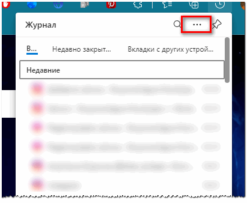
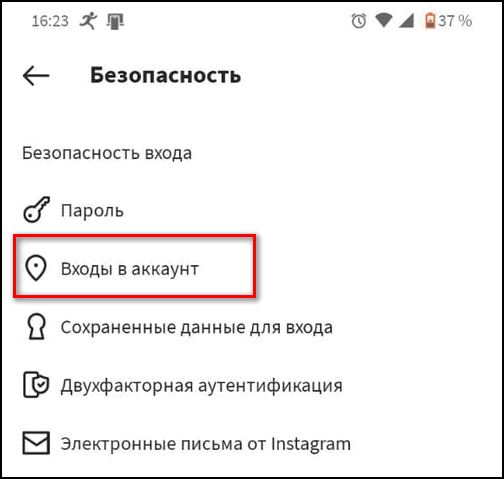
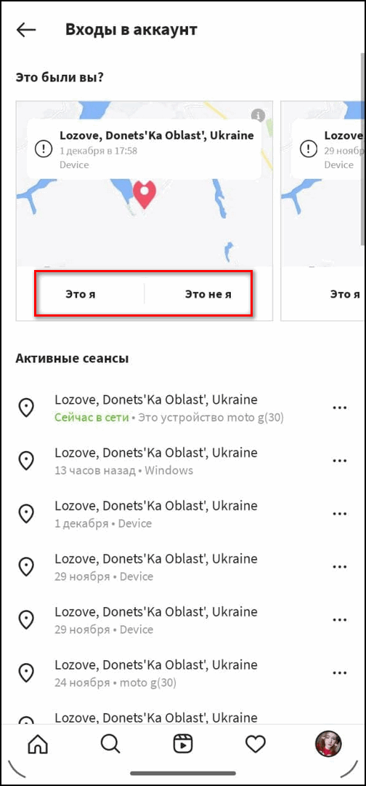
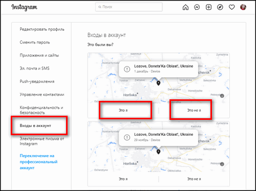

Подозрительная попытка входа в Инстаграм: что делать в такой ситуации

Подозрительная попытка входа в Инстаграм* появляется в том случае, если в профиль зашли с другого устройства. Например, если владелец аккаунта передал данные другому человеку или просто сменил геолокацию.
Обход подозрительной попытки входа в Инстаграме* на телефоне
Чтобы обойти подозрительную попытку входа в Инстаграме*, пользователю придется подтвердить номер телефона или воспользоваться другим устройством. Это может быть компьютер или планшет, с помощью которого пользователь ранее заходил в социальную сеть.
- воспользоваться другим устройством. Авторизоваться с помощью планшета или компьютера;
- подтвердить по номеру телефона или адресу электронной почты.
- Зайти в Инстаграм* – появится оповещение: «Подтвердите что это вы».
- Разрешить отправку сообщений – получить уведомление.
- Ввести пароль и подтвердить вход.
На компьютере
Если в Инстаграме* обнаружена подозрительная попытка входа, то она может быть связана с изменением IP-адреса. Так случается, если у владельца страницы не статичный, а динамический. Чтобы восстановить страницу полностью, нужно чтобы рядом был телефон. В противном случае, получить сообщение с подтверждением не получится. Как подтвердить доступ к странице:
- Зайти в Инстаграм* с веб-версии – авторизоваться.
- Появится уведомление: «Подтвердите, что это вы».
- Получить уведомление на телефон и подтвердить.
Также код безопасности могут отправить по прикрепленному адресу электронной почты. Как и на телефон, отправят код который поможет вернуть аккаунт. Перед восстановлением пользователь должен проверить:
- отключены ли службы;
- актуальность номера телефона.
Если владелец профиля не подключал ни номер, ни адрес электронной почты:
- Зайти в историю браузера (комбинация CTRL+H).

- Удалить данные за последний месяц и попытаться войти снова.
Такой вариант может сработать, если пользователь не менял геолокацию и IP-адрес. С помощью ПК версии получится войти в социальную сеть, а после – перейти к настройкам безопасности и разрешить вход на мобильном устройстве.
Проблема с IP-адресом
Одна из проблем, которая приводит к блокировке профиля – изменение в IP-адресе. Его присваивает провайдер при подключении к сети. И при постоянной работе, важное значение имеет именно динамический и статический. Если пользователь часто меняет адрес, то его могут заблокировать по IP.
- система безопасности, которая защищает социальную сеть от хакерских атак;
- защита учетной записи от взлома.
- попробовать подключиться с помощью мобильных данных;
- написать в техническую поддержку;
- сбросить данные и зайти в приложение с другого устройства.
Например, если владелец страницы не может войти с помощью своего смартфона, который подключен к Wi-Fi – то нужно переключиться на мобильные данные, закрыть приложение и попробовать авторизоваться заново.
Настройки безопасности страницы
Чтобы посмотреть входы в Инстаграм*, пользователю придется зайти с компьютерной или мобильной версии. В социальной сети есть пункт с одноименным названием, который необходим для определения часто посещаемых геолокаций. Как это работает:
- Зайти в Инстаграм* – нажать сверху по трем полоскам.
- Безопасность – Входы в аккаунт.

- Нажать рядом с последним: «Это я».

Или, если владелец страницы заметил странные посещения – нужно отметить, как «Это не я» и получить код подтверждения по номеру телефона. В случае, если владелец страницы не сможет подтвердить авторизацию – его страницу могут заблокировать.
Помимо IP-адреса, в этом разделе указана геолокация. Таким образом владелец страницы сможет определить, кто его взломал или откуда поступает запрос на подключение к учетной записи. Чтобы уберечь свои личные данные, нужно поменять пароль и проверить последние сообщения по адресу электронной почты.
Что делать если ошибка появляется постоянно
Проблема с авторизацией может зависеть не только от смены геолокации, но и от заполненности внутренней памяти. При посещении приложений, сайтов, смартфон сохраняет информацию. Поэтому один из вариантов, как навсегда избавиться от ошибки сети – использовать удаление временных файлов и кэша. Как удалить:
- Зайти в раздел: «Настройки» на смартфоне.
- Приложения – найти в списке Инстаграм*.
- Нажать: «Удалить временные данные» - подтвердить действие.
Кроме этого, можно переустановить приложение и обновить. Данные, которые были сохранены от предыдущей версии, будут удалены.
Как посмотреть историю входов в Инстаграме*
С помощью компьютерной и мобильной версий можно просматривать историю входов. В разделе: «Безопасность» доступны все данные, которые касаются последней авторизации на протяжении недели. Поэтому, пользователь сможет отследить: кто заходил на его страницу и в какое время. Чтобы посмотреть с компьютерной версии:
- Зайти в Инстаграм* с веб-версии – нажать по значку своей аватарки.
- Нажать: «Настройки» - Безопасность.

- Входы в аккаунт – появится перечень авторизаций.
Администрация рекомендует регулярно заходить в этот раздел, А также проверять список устройств, через которые была совершена авторизация. Например, если владелец страницы регулярно использует только смартфон, то он будет отображен в виде операционной системы и модели.
Если же пользователь заметил, что было использовано другое устройство:
- на данные влияют эмуляторы;
- если заходил с другого смартфона, планшета.
Важно смотреть на геолокацию, откуда был выполнен вход в социальную сеть. Если владелец профиля редко менял устройства, то перечень с авторизацией будет составлен за пол года.
Что делать если обнаружены чужие попытки входа
Если владелец профиля заметил, что его страницу посещали другие пользователи, он может воспользоваться заменой пароля и отметить последние входы как «Это не я». Другие способы, как обезопасить свою учетную запись:
- двухфакторная аутентификация. Второй пароль приходит либо по номеру телефона, либо в приложение Google authenticator;
- прикрепить к странице адрес электронной почты и номер телефона;
- регулярно менять пароль: раз в месяц.
Постоянное наблюдение за списком авторизации спасет от взлома и вероятности потерять свои данные. Если профиль в Инстаграме* взламывают, то администрация предлагает всего два способа решения проблемы: написать в поддержку или же заменить пароль. Причем, если аккаунт уже взломан, то смена пароля не поможет и придется только обращаться к технической поддержке. В этом случае, помощь может отвечать в течение трех дней или вовсе не отреагировать.